Page 02 · The state of urban spaces
The quality of life in Indian cities is falling
In India, understanding the state of urban public spaces is more critical than ever. Urban public space is the common ground that connects all public life: the matrix of natural, built and unbuilt space in a city.
Every scale is shrinking
From forest to footpath
The same story repeats at every size, from a national park to the strip of pavement outside your door.
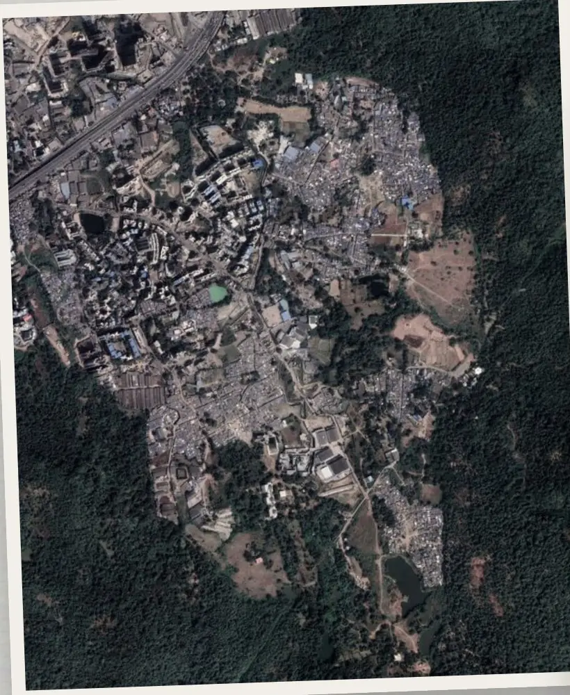
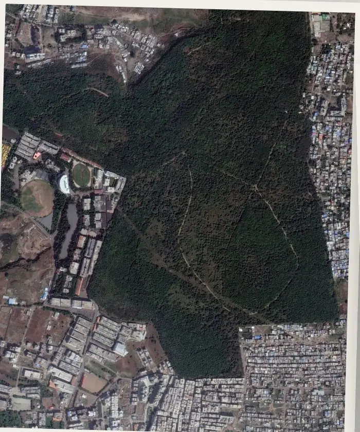
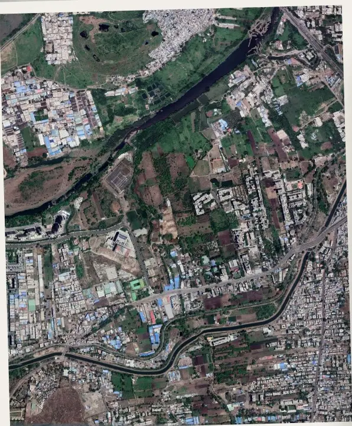
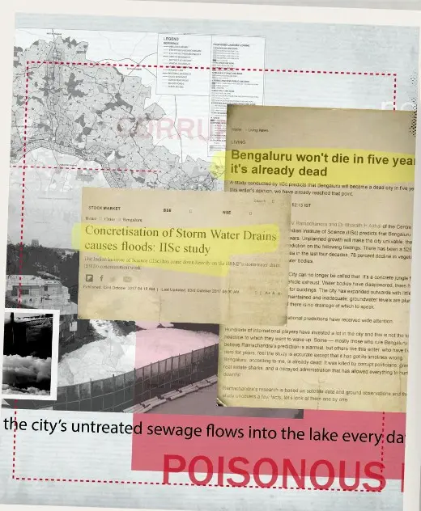
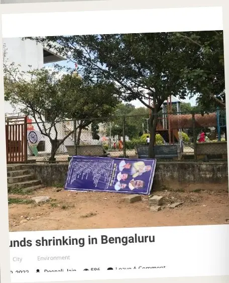
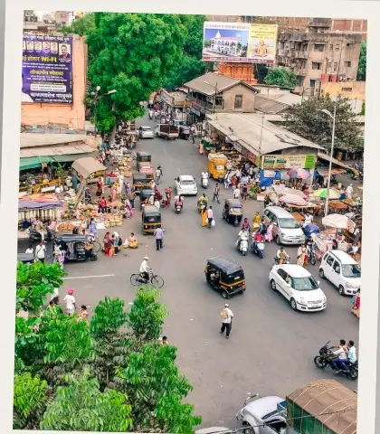
Satellite imagery: Google Earth
30 warning signs we track
Critically important urban public space indicators in the Indian context
Hover over or tap a photograph to read it.
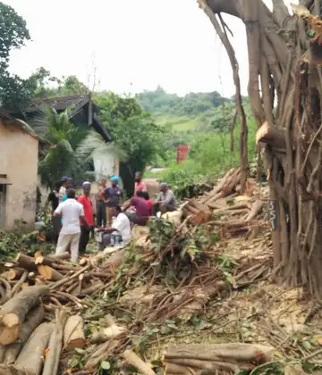
01Strategic destruction and degradation of natural ecosystems in urban areas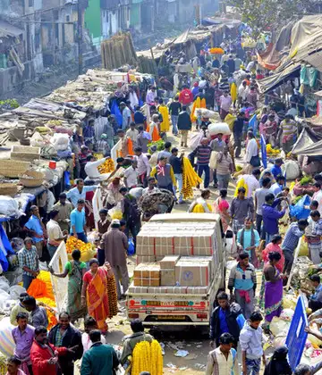
02Male domination in public spaces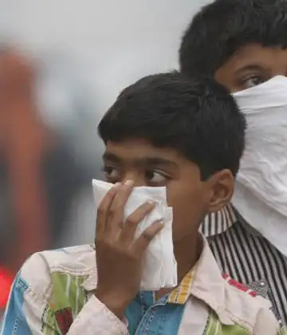
03Increasing urban pollution: air, water, noise, land, light and visual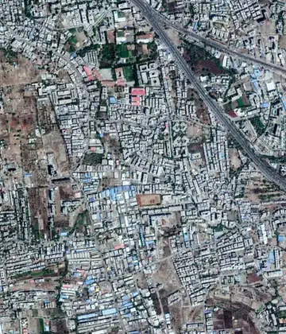
04Decreasing public built and open spaces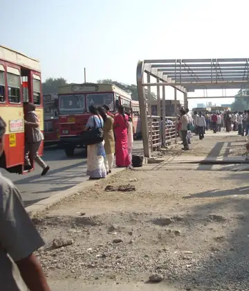
05Poor quality of public transport and declining bus ridership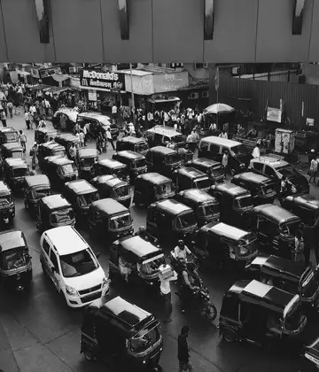
06Domination of private vehicles over public spaces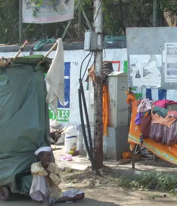
07Increasing disparity and inequality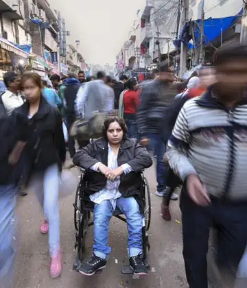
08Inaccessibility for vulnerable groups- 09Increasing encroachment on public spaces
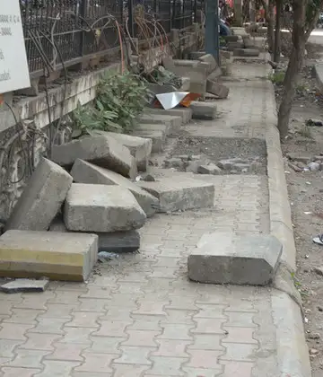
10Poor quality of pedestrian infrastructure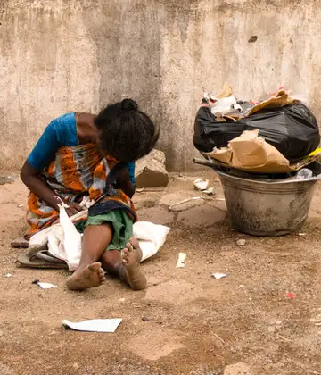
11Decline in public health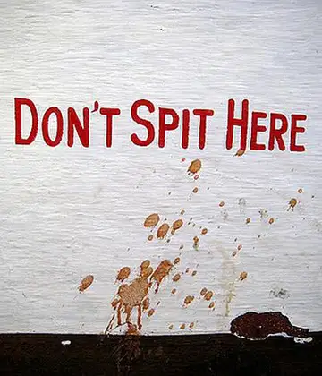
12Antisocial behaviour in public spaces- 13Discrimination in public spaces
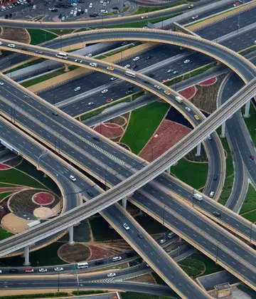
14Increasing grey infrastructure over green infrastructure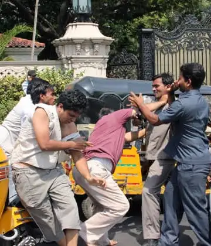
15Increasing road rage, fights and murders in public spaces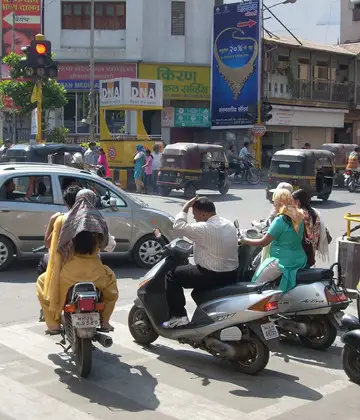
16Undisciplined road users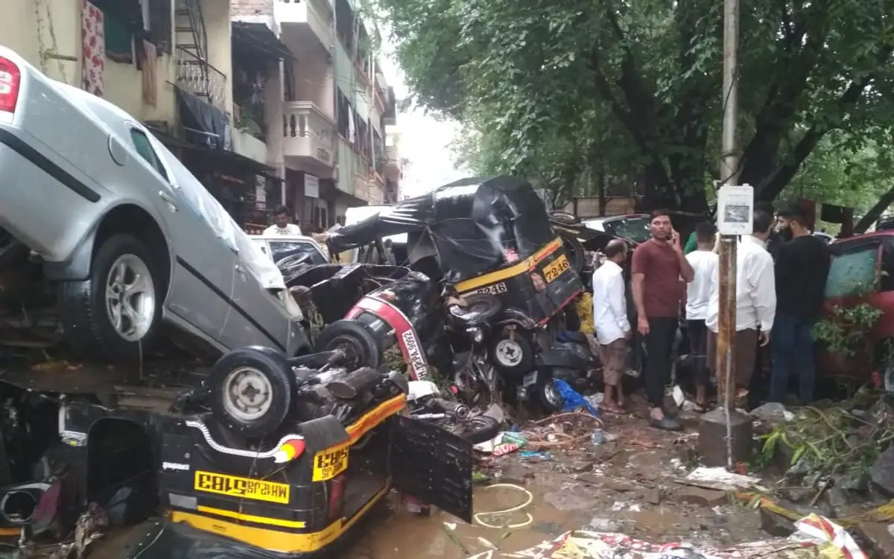
17Increasing extreme weather: urban flooding and the urban heat island effect- 18Including the LGBTQ community in public spaces
 19Poor quality of architectural fabric
19Poor quality of architectural fabric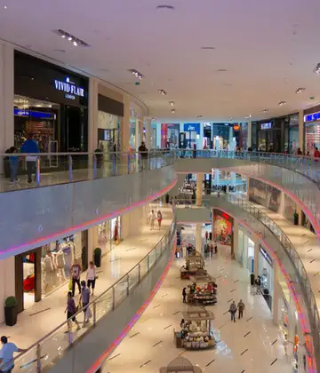
20Increasing cosmetic spaces and commercialisation of public spaces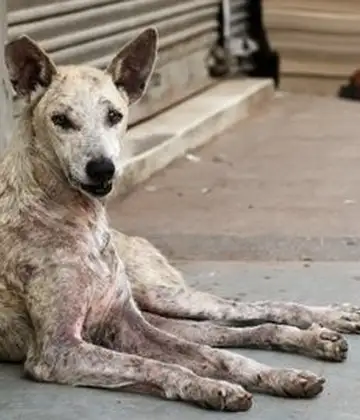
21Increasing insensitivity towards people and animals in public spaces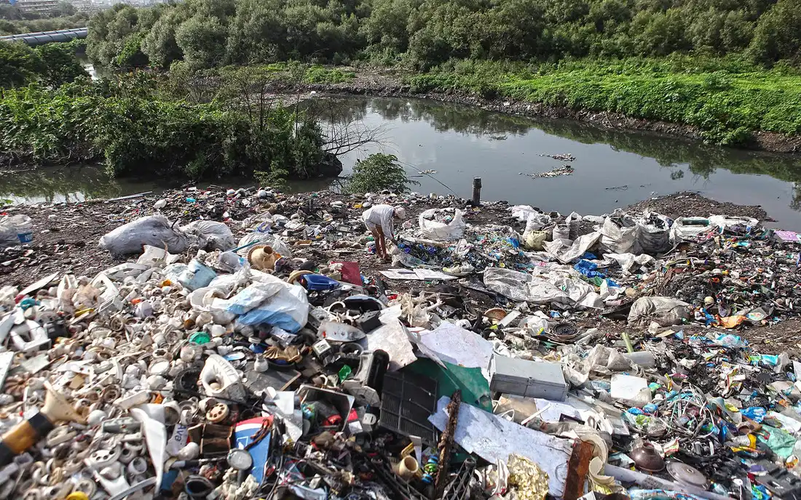
22Unhygienic public spaces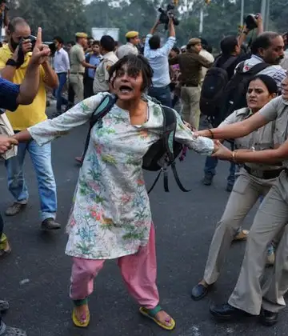
23Increasing moral policing in public spaces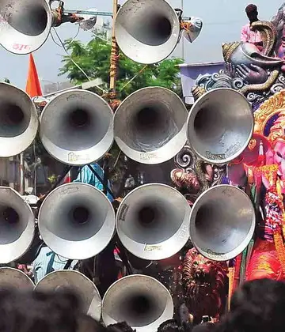
24Increasing nuisance of public festivals- 25A fading sense of belonging towards the city and its public spaces
- 26Unlawful, abusive and violent behaviour towards common people by political and criminal mafias
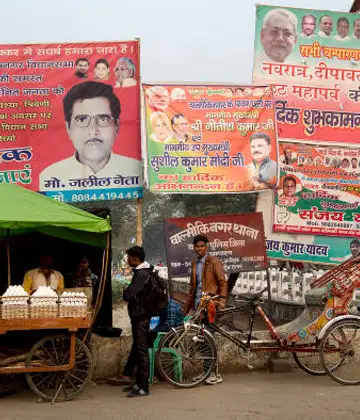
27Political dominance in public spaces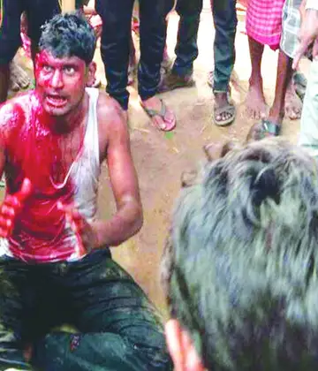
28Increasing mob lynching in public spaces- 29Gangs terrorising public spaces through beatings, murders, threats and destruction of public property
- 30Increasing intolerance in public spaces
Different symptoms. One loss: the space that belongs to everyone.
The Space Within explores these indicators in detail and traces their relationship with urban public space through case studies.
The scale of the loss
Three numbers
of accessible open space for each Mumbai resident. India's own planning guidelines ask for 10 to 12 m².
of Bengaluru's water bodies lost in four decades, as built up area grew 525%.
playgrounds planned in Pune's 1987 Development Plan actually available by 2013.
Sources: ORF Occasional Paper 241, 2020, citing URDPFI 2014; IISc study by T. V. Ramachandra and Bharath H. Aithal, reported by Firstpost, May 2016; Mid-Day, 16 April 2013.
Open space per person, in square metres
How much city do you get?
*Pune: gardens and playgrounds reserved in the 2025 plan for merged villages (162 ha for 6 lakh people); no citywide count is published. Others: Urban Greening Guidelines 2014 and city master plans, via Citizen Matters; London and New York, ORF 2017. Norm: URDPFI 2014.
1 playground for every
37,000children under seven
3,37,062 children aged 0 to 6 (Census 2011). 9 playgrounds available (2013). Had the 1987 plan been built: one for every 1,900.
Death in the air
Air pollution
Indian cities are choked by polluted air. PM2.5 particles are smaller than 2.5 micrometres, about 3% of the width of a human hair, small enough to enter the bloodstream and raise the risk of respiratory disease, heart disease and lung cancer.
Air quality is one of the first things that defines a public space. Bad air keeps people away from their surroundings and turns the commons into a health risk.
In the 2025 World Air Quality Report, India ranked as the sixth most polluted country, and Loni in Ghaziabad was the world's most polluted city, at 112.5 µg/m³ of PM2.5 a year.
Exposure to PM2.5 over a few hours to weeks can trigger cardiovascular disease related mortality and nonfatal events; longer term exposure increases the risk for cardiovascular mortality to an even greater extent.American Heart AssociationScientific statement, 2010
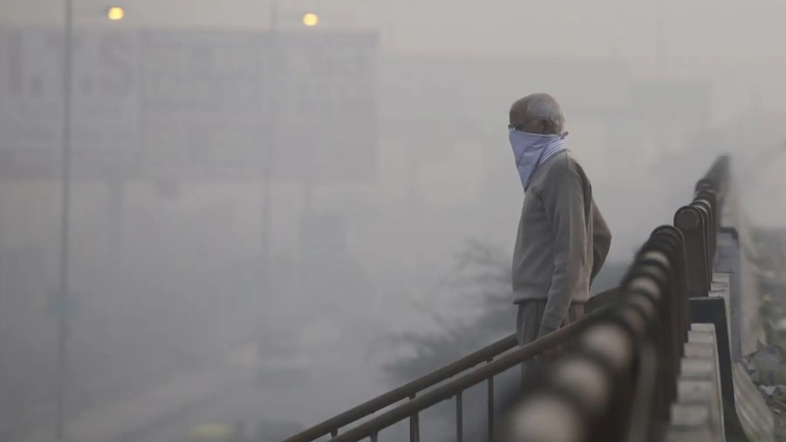
When the water comes
Increasing urban flooding
Almost every metropolitan city in India now floods, and it happens more often each year. Urban flooding breaks the environmental, social and economic framework of a city and stops its daily life.
The cause is built into the city. Encroaching on open spaces, river floodplains, streams and hills changes how the land drains. Water goes where the plan forgot it had to go.
Katraj, Pune, 2019. Hills cut, streams built over. Ambil Odha flooded in September; at least 17 people died.
Vanishing open public spaces from cities
Open public spaces under stress
Open public spaces in Mumbai, Delhi, Bengaluru, Pune and Hyderabad are shrinking fast, and tier two and three cities are on the same path. Children's playgrounds and community spaces are replaced by towers, or by cosmetic spaces meant only for the well off.
Open spaces are removed from development plans by a nexus of private and public actors with vested interests. Court cases show developers and politicians together taking land reserved for children, elders and recreation.
trees felled for a Metro car shed in Aarey, Mumbai's green lung, over two days in October 2019, while citizens protested at the gates.
“Don't cut anything now.”
The Supreme Court, 7 October 2019. By then the felling was done.
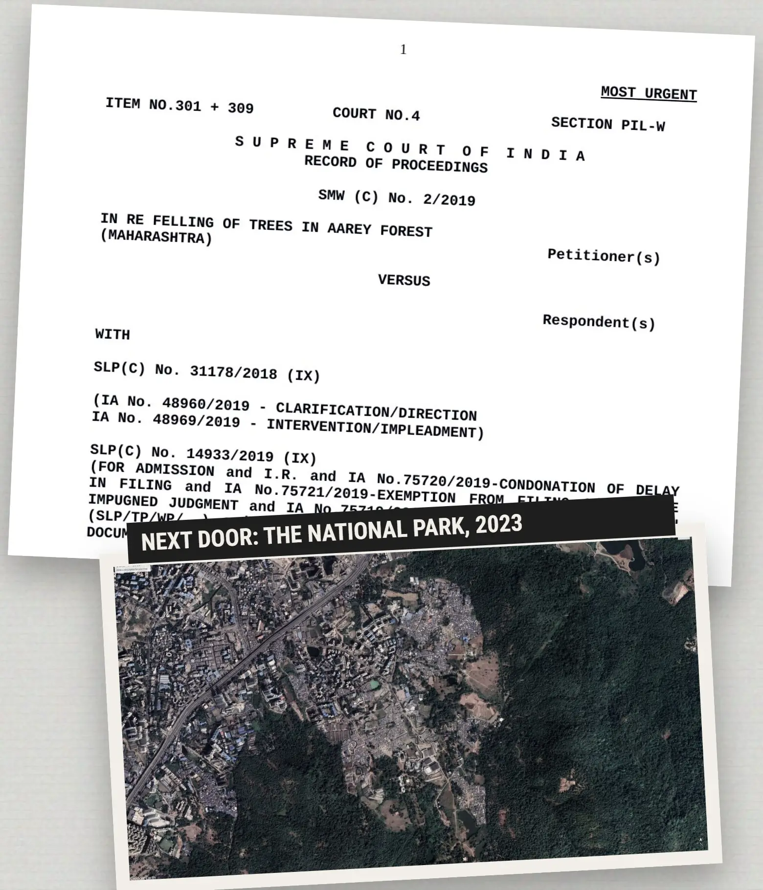
Mumbai · Sanjay Gandhi National Park
A forest inside a megacity. Watch its edge.
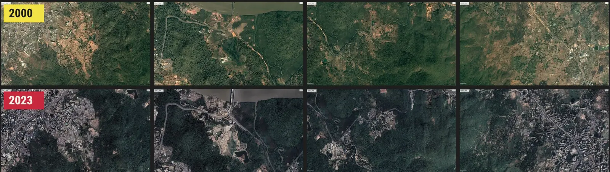
Four points on the park's edge. Twenty three years. The grey moves in.
Google Earth imagery, compiled for The Space Within's 2023 series on encroachment of green spaces.
The Maharashtra Regional and Town Planning Act
How a playground disappears, legally
The plan
The Development Plan reserves land for a park, a playground, a school.
The wait
The city must acquire the land. Often it never does: no budget, no will.
The notice
After ten years, the owner serves a purchase notice under Section 127.
The lapse
If the city still does not act in time, the reservation lapses.
The tower
The land goes back to the owner and is built on. The playground stays on paper.
Plans that arrive late
Pune declared a plan for its merged villages in 2018. It missed every deadline; in 2025 a state town planner had to finish it. Even on paper it gives each resident about 2.7 m² of gardens and playgrounds.
What it costs people
Children play on roads. Streams built over turn into floods. Every lapsed reservation is a park a whole neighbourhood will never have.
Nothing illegal happened. That is the scandal.
Poisoning the lifelines
Encroachment on water bodies and water pollution
Most Indian cities grew on the banks of rivers and lakes. Rivers shaped them culturally, socially and ecologically, and their banks were among the first public spaces.
Cities were planned as if water bodies did not exist. Their ecology and the services they give residents were never counted, so they were filled, narrowed and used as drains.
The Central Pollution Control Board's 2025 assessment lists 296 polluted river stretches across India, based on 2022 to 23 monitoring.
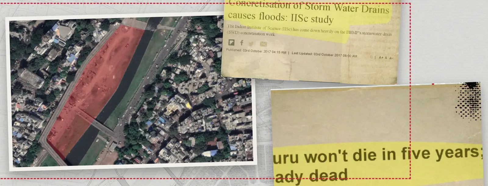
Roads over rivers and hills
Urban transport: traffic taking over public spaces
Footpaths become parking, buses lose riders to private vehicles, and new roads are drawn over hills and riverbeds. The street as a shared room is giving way to the street as a traffic lane.
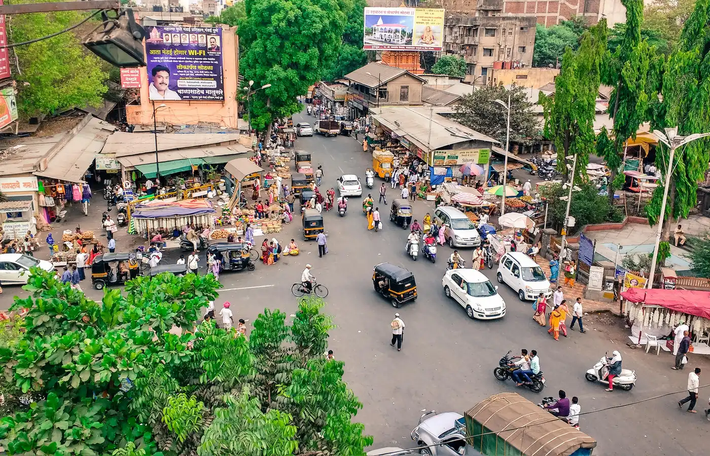
Pune · Vetal tekdi
The hill they want to cut
- 1987A link road is drawn across Vetal tekdi, the city's largest green hill.
- 2016The Bombay High Court strikes it down until an impact assessment is done.
- 2025It is back. The Supreme Court tells PMC to get environmental clearance first. Twin tunnels and a ring road are planned on the same hill.
of road
trees at risk, by different estimates
of commute it claims to save
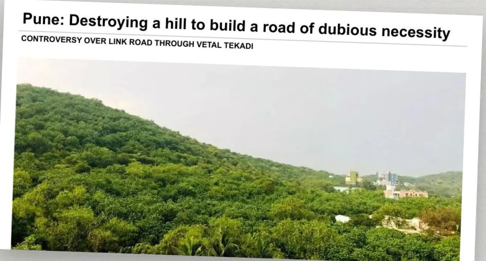
Baner, July 2026. A hill dug at night beside the biodiversity park. PMC's own verdict: “the activity was illegal”.
Baner. A concrete structure on land reserved for a biodiversity park, still standing five years after PMC ordered it down.
Hinjewadi, 2004 to 2015. Hills became an IT park. Satellite archives become the series' signature: the same frame, years apart.
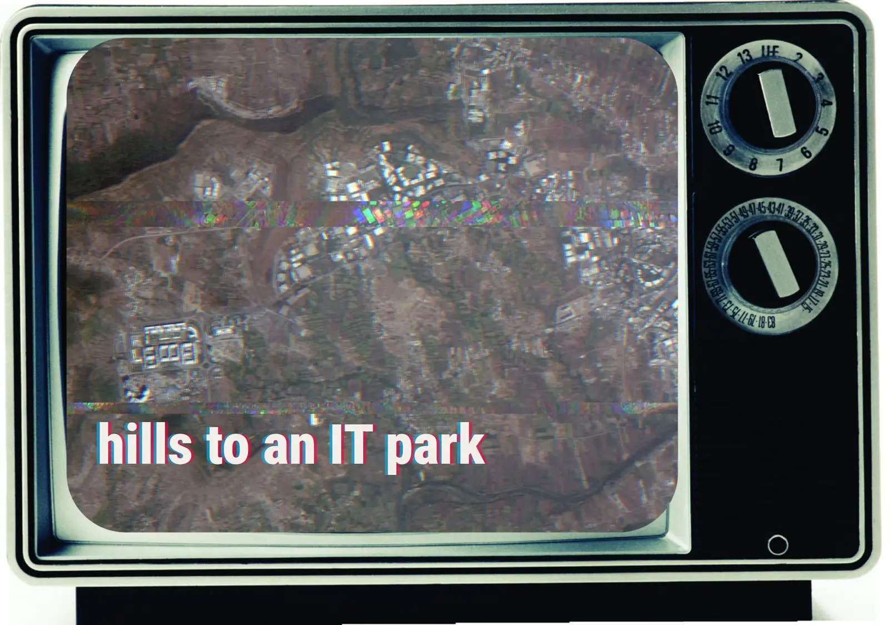
Hinjewadi, west Pune · 2004 to 2015
Hills to an IT park
Satellite archives become the series' signature: the same frame, years apart.
Imagery: Google Earth
On the record
The courts have said it
Protection of the environment, open spaces for recreation and fresh air, play grounds for children, promenade for the residents, and other conveniences or amenities are matters of great public concern and of vital interest to be taken care of in a development scheme.Bangalore Medical Trust v. B. S. Muddappa
We have reached a situation where even if God encroaches upon a public space, the courts will direct the removal of such encroachments.Justice N. Anand Venkatesh, reported in The Hindu, 25 March 2022
Don't cut anything now.Special bench, 7 October 2019. 2,141 trees were already down.
Environmental damage “cannot be dealt with by authorities at leisure.”On untreated sewage entering India's water bodies, reported by PTI in The Hindu BusinessLine
Warped definitions of progress, fancier cars for the few, little or no attention to mass transit and public transport, public infrastructure and open spaces, lead to urban built forms that are incongruous and inappropriate.Justice Gautam Patel, August 2013
From our research files
In the news
Every city. Every year. Recent reporting on each of the five chapters above.
01 · Air pollution
- A 2025 world air quality report lists India as the sixth most polluted countryThe Wire · 26 March 2026
- Delhi among top 10 most polluted cities in the worldIQAir newsroom · 15 October 2025
- Delhi logged 200 'clean' days in 2025. So why did this winter feel this bad?Newslaundry · 9 February 2026
- Explainer: why lethal smog keeps returning to DelhiETV Bharat · December 2025
- How India moves: Pune's roads buckle under an explosion of two wheeler trafficDown To Earth
- Particulate matter air pollution and cardiovascular disease, scientific statementAmerican Heart Association, Circulation, 2010
02 · Urban flooding
- 212 people evacuated in Pune as water released from dam floods low lying areasThe Week · 20 August 2025
- Mumbai rain fury: 350 persons shifted as Mithi river swellsThe Week · 19 August 2025
- 26/7 Mumbai floods, twenty years later: city still vulnerable to delugeDeccan Herald · July 2025
- Bengaluru's infrastructure fails crucial rain test, crumbles before monsoon arrivesThe News Minute · May 2025
- Bengaluru flooding is largely preventableDeccan Herald editorial · 2025
- Flood lines, riverfront development and citizen heroes: the story of Pune floodsSANDRP · August 2024
03 · Open public spaces
- The last playground: why Pune's parks are thriving while open spaces shrinkETV Bharat · May 2026
- Playground reservation cancelled for Katraj dairy expansion in a controversial decisionPunekar News
- AAP announces 'lock breaking' protest over closure of PG-13 playground in BavdhanPunekar News
- Activists oppose BMC move to convert football ground at Bandra Reclamation into exhibition centreFree Press Journal
- Bombay HC upholds slum rehab policy on open spaces, mandates 35% green spaceFree Press Journal
- The BMC must secure, not sell, open spaces in the cityFree Press Journal, analysis
04 · Water bodies
- CPCB report: polluted river stretches for restoration of water quality, 2025The Policy Edge · 30 September 2025
- As a riverfront plan advances, ecologists warn of damage to floodplains and biodiversityMongabay India · December 2025
- Pune riverfront work narrows the Mula Mutha, slashes green to greyQuestion of Cities
- Lost lakes, encroached drains: why some parts of Bengaluru flooded worse than othersThe News Minute
- Hyderabad: HYDRAA, Telangana's new agency, razes 52 encroachments on lake bedsThe Wire
05 · Urban transport
- India faces 70% urban bus deficit, finds new studyThe Pioneer · 2026
- Urban bus transport systems in dire straits in India, CSE and CITIES Forum studyCentre for Science and Environment
- Centre approves 1,000 electric buses for Pune under PM e-Drive schemeBusiness Standard · November 2025
- PMPML data dashboard: visualising public transport performanceParisar
- 'Footpaths are not dumping grounds': Bombay HC orders PMC to remove footpath obstructionsMoneylife
- Pune's pedestrian policy remains on paper: encroachments and neglect plague footpathsPunekar News
Important websites
Stand up for public space
Principles, policies and practice for planning, designing and managing public space.
CampaignStand up for public spacesA global campaign and resource on the right to public space.
PuneParisarResearch and advocacy on sustainable transport and urban governance, cofounded by our interviewee Ranjit Gadgil.